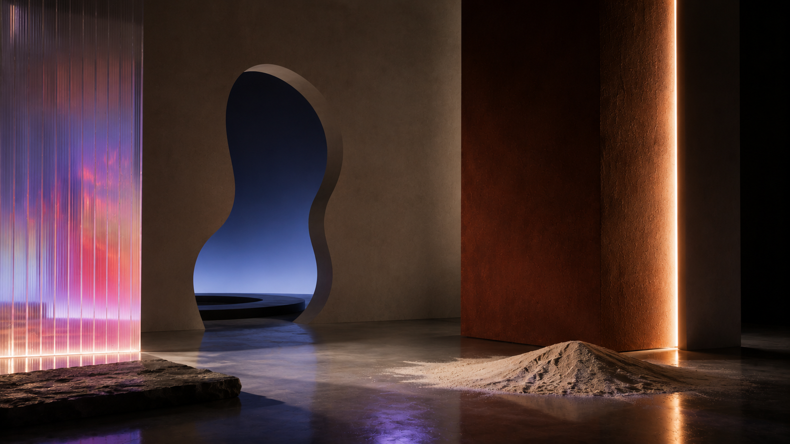

Is entry free?
Yes. The exhibition is free and open to the public.

All practical details for attending Bindi to Brera, a free public exhibition at Fabbrica del Vapore.
Visitors can move between craft experiences, material and cultural explorations, and the Womb of OM installation. The programme is designed for close looking, careful participation, and contemporary cultural interpretation.
Some hands-on experiences may have limited capacity at peak times, but the exhibition is built for walk-in discovery throughout the day.
Yes. The exhibition is free and open to the public.
The exhibition is planned for Fabbrica del Vapore in Milan.
Most experiences are walk-in. Capacity may be managed on site for comfort and quality.
Plan at least two hours for the core route, or longer if you want to participate in several craft experiences.
For partnerships, press, or visitor information, contact the team.